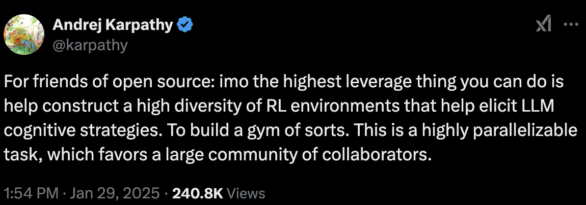

DeepSeek is built on a straightforward but powerful idea: teach a large language model to reason thoroughly before returning its final answer. Under the hood, DeepSeek maintains an internal chain-of-thought, essentially letting the model “think out loud,” and provides reinforcement (rewards or penalties) based on whether the solution is correct. It learns to replicate successful thinking patterns and avoid flawed ones.
This method shines in fields where correctness is clear-cut. In mathematics, a numeric answer is either right or wrong; in coding, a snippet of code either compiles and passes tests or it doesn’t. Thanks to these objective metrics, DeepSeek’s reinforcement loop quickly zeroes in on robust, reliable reasoning. The reported performance is striking: on math competitions, for example, DeepSeek can match or surpass other cutting-edge models once it fine-tunes itself against verified feedback loops.
Why Legal Reasoning is a Different Beast
Translating DeepSeek’s successes to law exposes its blind spot: “correctness” in legal arguments isn’t always black-and-white. Judges can interpret statutes differently. Legal questions often don’t hinge on a single right-or-wrong solution but on how persuasively an argument is framed, which can vary by jurisdiction or even by the disposition of the presiding judge. Settlements and negotiations also inject human factors into the mix, making law far more fluid than coding or pure math.
In other words, legal correctness can be subjective and context-dependent. If DeepSeek can’t reliably pin down a fail-proof success metric (like a passed unit test), how should it adapt its reasoning strategies?

The Idea of a “Legal Gym”
Andrej Karpathy and other AI researchers have championed the concept of diverse, “gym-like” environments to train language models. In principle, we’d create scenarios where a model’s legal reasoning could be systematically tested, just like running code through unit tests. But real-world law seldom offers tidy pass/fail indicators. Some legal tasks, such as checking if a case truly says what the model claims, can be automated and verified (rewarding correct citations). Yet more complex areas, like dissecting constitutional disputes, remain difficult because experts themselves often disagree.
Potential Directions
-
Segment Verifiable Subtasks
Certain legal tasks can be broken down into binary checks (e.g., “Is this citation quoted accurately?”). Here, DeepSeek’s method could still flourish by giving clear rewards for correctness. -
Expert Consensus
Where a task lacks an absolute answer, a panel of legal experts might offer approximate agreement signals. While not as cut-and-dried as a correct numeric solution, it can still serve as useful feedback to guide and refine a model’s reasoning. -
Hybrid Approaches
Combining supervised fine-tuning, where legal experts carefully label or annotate data, with selective reinforcement learning (focused on tasks more amenable to yes/no judgments) may strike a balance. For instance, RL can help catch procedural errors or verify that a model’s summary of a case holding is accurate.
Even if law never achieves the neat pass/fail structure of code or math, DeepSeek’s foundational principle could still revolutionize legal-tech applications. By blending partial, expert-driven reinforcement signals with classic supervised training, legal AI may eventually approach the benefits of DeepSeek’s “think-then-answer” style without getting lost in the murkiness of open-ended legal questions. The path ahead involves careful engineering and a willingness to accept that, in some domains, the lines between “right” and “wrong” will always remain fuzzy.